zuletzt aktualisiert am 13. September 2014 um 14:44 Uhr
Eckis Nachlass – Teppiche
Bitte auf die Bilder klicken, um sie in groß zu sehen!
Teppich 161: Wolle geknüpft, 218x108 cm²; kann Jan größtenteils gebrauchen
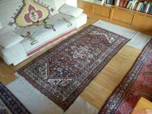Teppich 162: Hamadan handgeknüpft, 280x118 cm², 1890 DM; kann Jan größtenteils gebrauchen
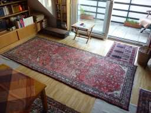Teppich 163: Buchara handgeknüpft, 97x61 cm²; kann Jan größtenteils gebrauchen
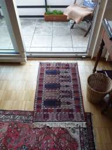Teppich 164: geknüpft (Seide?), 90x63 cm²; kann Jan größtenteils gebrauchen, nimmt Carsten, wenn ihn sonst niemand haben will
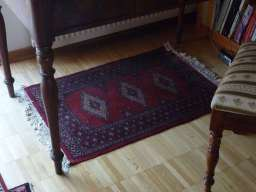Teppich 203: persisch handgeknüpft, 308x73 cm², 750€ 2011; kann Jan größtenteils gebrauchen
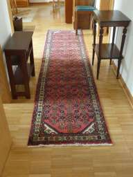Teppich 214: Kunstfasern, 110x70 cm²; kann Jan größtenteils gebrauchen
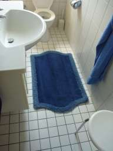Teppich 240: handgeknüpft, 216x155 cm²; kann Jan größtenteils gebrauchen, nimmt Anne, wenn ihn sonst niemand haben will
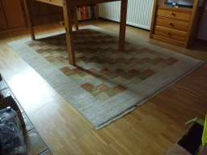Teppich 243: Wolle geknüpft, 30x30 cm², 20 DM; kann Jan größtenteils gebrauchen
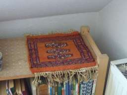Teppich 244: Wolle gewebt, 140x70 cm²; kann Jan größtenteils gebrauchen
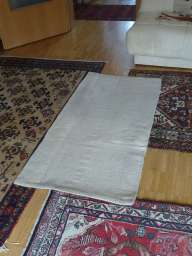Teppich 245: Wolle gewebt, 144x71 cm²; kann Jan größtenteils gebrauchen
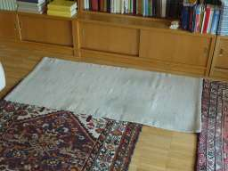Teppich 267: handgeknüpft, 202x152 cm²; kann Jan größtenteils gebrauchen
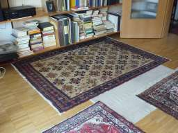Teppich 321: geknüpft, 187x96 cm²; kann Jan größtenteils gebrauchen
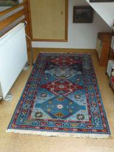Teppich 327: Wolle gewebt, 216x130 cm²; kann Jan größtenteils gebrauchen, nimmt Anne, wenn ihn sonst niemand haben will
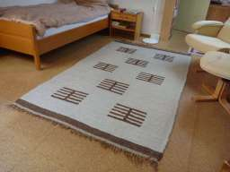Teppich 357: Wolle gewebt, 143x71 cm²; kann Jan größtenteils gebrauchen
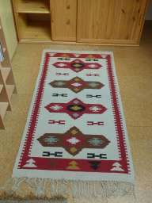
{kind=link}
{kind=link}
{kind=link}
{kind=link}
{kind=link}
{kind=link}
{kind=link}
{kind=link}
{kind=link}
{kind=link}
{kind=link}
{kind=link}
{kind=link}
{kind=link}